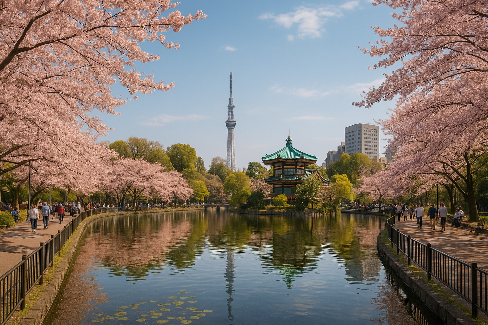
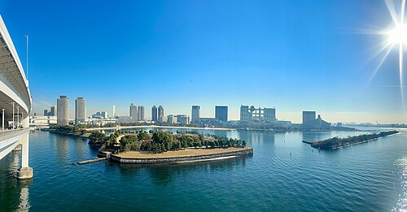

Tóquio é a capital do Japão e uma das maiores cidades do mundo. Moderna e vibrante, combina tecnologia de ponta com tradições antigas. É famosa por seus arranha-céus, templos como o Senso-ji, cruzamentos movimentados como o de Shibuya, e bairros animados como Shinjuku e Akihabara. Além disso, oferece uma culinária rica, transporte eficiente e uma cultura única que mistura o antigo e o futurista. Clique em saiba mais
Parque Ueno
Odaiba
Torre de Tóquio